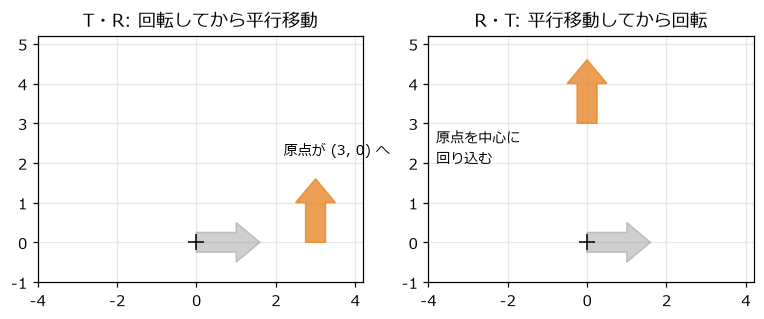
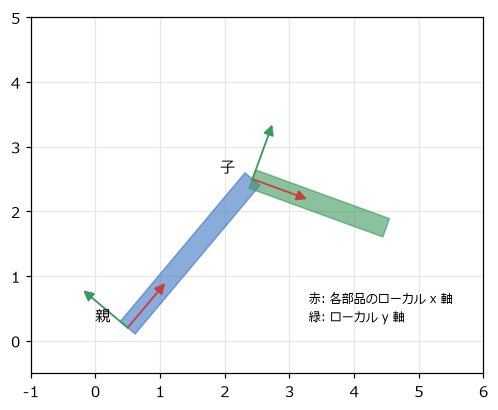
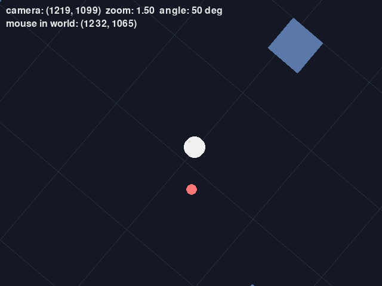
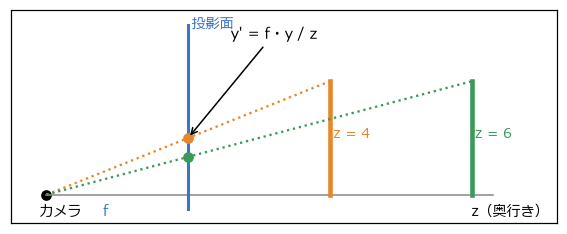

6. 行列と座標変換
前の章では、点を回転させる式を扱った。ゲームでは、回転のほかに拡大縮小と平行移動を組み合わせ、さらに「腕の先の手」「船の上の砲台」のような親子関係や、スクロールするカメラも扱う。こうした変換を統一的に扱う道具が行列である。
6.1. 変換を行列で表す
前の章の回転の式は、行列とベクトルの積で書ける。
行列とベクトルの積は、「行列の各行とベクトルの内積を並べたもの」である。上の式の 1 行目を計算すると \(x' = x\cos\theta - y\sin\theta\) になり、前の章の式と一致する。行列の各列は、前の章の図 5.3 で見た「x 軸と y 軸の単位ベクトルが移る先」になっている。
拡大縮小も行列で書ける。x 方向に \(s_x\) 倍、y 方向に \(s_y\) 倍するなら、次のとおりである。
\(s_x = -1\) にすると左右が反転する。2D のゲームで、キャラクターの絵を左右反転して逆向きに歩かせるときに使う。
6.2. 同次座標で平行移動も行列にする
平行移動 \((x + t_x, y + t_y)\) は、2×2 の行列の積では書けない。行列の積は、原点 (0, 0) を必ず原点に移すからである。
そこで、点 \((x, y)\) に 3 番目の成分として 1 を付け加えた \((x, y, 1)\) で表し、3×3 の行列を使う。このような表し方を同次座標と呼ぶ。
左上の 2×2 の部分（\(a, b, d, e\)）が回転や拡大縮小を、右の列（\(c, f\)）が平行移動を表す。回転・拡大縮小・平行移動を組み合わせた変換をアフィン変換と呼び、2D のアフィン変換はすべてこの形の行列で表せる。
同次座標の 3 番目の成分を 0 にすると、平行移動の影響を受けなくなる。位置（点）は 1、向きや速度（ベクトル）は 0 として変換すると、「向きは回転するが、平行移動はしない」という正しい扱いになる。
リスト 6.1 は、この行列を表すクラス Mat3 である。最後の行は常に (0, 0, 1) なので、上の 2 行の 6 つの値だけを持っている。
1@dataclass(frozen=True)
2class Mat3:
3 """2 次元のアフィン変換を表す 3×3 行列。"""
4
5 a: float = 1.0
6 b: float = 0.0
7 c: float = 0.0
8 d: float = 0.0
9 e: float = 1.0
10 f: float = 0.0
11
12 @staticmethod
13 def translation(tx: float, ty: float) -> Mat3:
14 """平行移動。"""
15 return Mat3(1, 0, tx, 0, 1, ty)
16
17 @staticmethod
18 def rotation(angle: float) -> Mat3:
19 """原点を中心とする回転（angle はラジアン）。"""
20 c, s = math.cos(angle), math.sin(angle)
21 return Mat3(c, -s, 0, s, c, 0)
22
23 @staticmethod
24 def scaling(sx: float, sy: float) -> Mat3:
25 """原点を中心とする拡大縮小。"""
26 return Mat3(sx, 0, 0, 0, sy, 0)
27
6.3. 変換の合成と順序
複数の変換を続けて行うことを、変換の合成と呼ぶ。行列では、合成は行列の積になる。点 \(\mathbf{p}\) に変換 \(B\) を行ってから変換 \(A\) を行う場合は、次のように書ける。
積 \(AB\) を一度計算しておけば、たくさんの点を 1 回の行列の積で変換できる。ここで、行列は右から順に適用されることに注意する。\(AB\) は「先に \(B\)、後に \(A\)」である。
行列の積は、掛ける順番を入れ替えると一般に結果が変わる。図 6.1 は、90° の回転 \(R\) と (3, 0) の平行移動 \(T\) を、異なる順序で合成した例である。

図 6.1 変換の順序による違い。灰色が元の形、橙が変換後の形
\(TR\)（回転してから移動）: 矢印はその場で上を向き、(3, 0) へ移る。
\(RT\)（移動してから回転）: 矢印は (3, 0) へ移ってから原点を中心に回るので、(0, 3) へ回り込む。
物を「その場で回して、置きたい場所へ動かす」なら、\(T R S\)（拡大縮小 → 回転 → 平行移動の順に適用）にするのが基本である。
1 def __matmul__(self, other: Mat3) -> Mat3:
2 """行列の積 self @ other。点に適用すると、other を先に、self を後に適用したことになる。"""
3 return Mat3(
4 self.a * other.a + self.b * other.d,
5 self.a * other.b + self.b * other.e,
6 self.a * other.c + self.b * other.f + self.c,
7 self.d * other.a + self.e * other.d,
8 self.d * other.b + self.e * other.e,
9 self.d * other.c + self.e * other.f + self.f,
10 )
Python では @ 演算子で行列の積を書けるように、__matmul__ を定義している。transform2d.py を実行すると、図 6.1 と同じ計算の結果が表示される。
6.4. ローカル座標とワールド座標
物の形は、その物自身を基準とした座標系で定義しておくと扱いやすい。この座標系をローカル座標と呼ぶ。たとえば、車の形は「車の中心が原点、前方が x 軸」のローカル座標で定義する。車がゲームの世界のどこにあり、どちらを向いているかは、ローカル座標からワールド座標への変換（ワールド変換）で表す。
6.4.1. 親子関係
ロボットの腕のように、ある部品（子）が別の部品（親）に取り付けられている場合を考える。子の位置と向きは、親を基準にして決まる。親が動けば、子も一緒に動く。
この関係は、行列の積でそのまま表せる。子のワールド変換は、親のワールド変換に「親から見た子の変換（子のローカル変換）」を掛けたものである。
図 6.2 は 2 つの部品からなる腕である。それぞれの部品のローカル座標の軸を矢印で示している。子の座標系は、親の先端に置かれ、親の向きに対してさらに回転している。


図 6.2 親子関係のある部品のローカル座標
arm_demo.py は、3 つの関節を持つロボットアームである。リスト 6.3 のように、根元から順に、親のワールド変換に自分のローカル変換を掛けていく。
1def segment_world_transforms(base: Mat3, angles: list[float]) -> list[Mat3]:
2 """各部品のワールド変換を、根元から順に求める。"""
3 transforms = []
4 parent = base
5 parent_length = 0.0
6 for angle, length in zip(angles, SEGMENT_LENGTHS):
7 # 親の先端へ移動してから、自分の関節の角度だけ回す
8 local = Mat3.translation(parent_length, 0) @ Mat3.rotation(angle)
9 world = parent @ local
10 transforms.append(world)
11 parent, parent_length = world, length
12 return transforms
各部品のローカル変換は「親の先端へ移動してから、自分の関節の角度だけ回す」である。Q キーで第 1 関節を回すと、先の 2 つの部品も一緒に回ることを確かめられる。このように、物を親子関係の木構造で管理する仕組みをシーングラフと呼ぶ。Unity の Transform や Godot の Node2D は、この仕組みを提供している。
6.5. カメラ
スクロールするゲームでは、ワールド座標の物を画面に描く前に、カメラに合わせて変換する。この変換をビュー変換と呼ぶ。2D のカメラが位置 \(\mathbf{c}\)、回転角 \(\phi\)、ズーム率 \(z\) を持つとき、ワールド座標を画面座標に変換する行列は次のようになる。
右から順に、次の変換を行っている。
カメラの位置が原点に来るように、世界全体をずらす。
カメラが回った角度と逆向きに、世界全体を回す。
ズーム率に合わせて拡大縮小する。
原点（カメラの位置）が画面の中央に来るようにずらす。
カメラを右に動かすと世界は左に動いて見え、カメラを時計回りに回すと世界は反時計回りに回って見える。カメラの変換は、カメラ自身のワールド変換の逆になっている。
1def view_matrix(camera: pygame.Vector2, zoom: float, angle: float, shake: pygame.Vector2) -> Mat3:
2 """ワールド座標を画面座標に変換する行列。右から順に適用される。"""
3 return (
4 Mat3.translation(SCREEN_WIDTH / 2 + shake.x, SCREEN_HEIGHT / 2 + shake.y) # 4. 画面の中央へ（揺れのずれも加える）
5 @ Mat3.scaling(zoom, zoom) # 3. 拡大縮小
6 @ Mat3.rotation(-angle) # 2. カメラの回転と逆向きに回す
7 @ Mat3.translation(-camera.x, -camera.y) # 1. カメラの位置が原点に来るように動かす
8 )
camera_demo.py では、すべての物の頂点をこの行列で変換して描いている。カメラの揺れ（スペースキー）は、手順 4 のずらす量に小さな乱数を加えるだけで実現している。揺れを乱数の代わりにノイズで作る方法は第 9 章で、カメラを滑らかに追従させる方法は第 8 章で扱う。


図 6.3 camera_demo.py の画面（カメラを回転・ズームしている）
6.6. 逆変換
マウスでクリックした場所にある物を選ぶには、画面座標をワールド座標に戻す必要がある。これには、ビュー変換の逆行列 \(V^{-1}\) を使う。逆行列は、元の行列と掛けると何もしない変換（単位行列）になる行列である。
アフィン変換の逆行列は、左上の 2×2 の部分の逆行列と、平行移動の部分から計算できる。
1 def inverse(self) -> Mat3:
2 """逆行列。拡大率が 0 の変換（行列式が 0）には逆行列が無い。"""
3 det = self.a * self.e - self.b * self.d
4 if abs(det) < 1e-12:
5 raise ValueError('この変換には逆変換が無い')
6 ia, ib = self.e / det, -self.b / det
7 id_, ie = -self.d / det, self.a / det
8 return Mat3(ia, ib, -(ia * self.c + ib * self.f), id_, ie, -(id_ * self.c + ie * self.f))
det は 2×2 の部分の行列式で、変換によって面積が何倍になるかを表す。拡大率が 0 の変換は面積を 0 につぶしてしまい、元に戻せないので、逆行列が無い。
合成した変換の逆変換は、それぞれの逆変換を逆の順序で合成したものになる。
「靴下をはいてから靴をはく」の逆が「靴を脱いでから靴下を脱ぐ」になるのと同じである。camera_demo.py でクリックすると、view.inverse() でクリック位置をワールド座標に変換し、そこに印を置く。カメラを回したりズームしたりしても、印はクリックした場所の地面に留まる。
6.7. 3D への拡張の概要
3D でも考え方は同じである。点を \((x, y, z, 1)\) の同次座標で表し、4×4 の行列で回転・拡大縮小・平行移動を表す。ローカル座標 → ワールド座標 → カメラから見た座標（ビュー座標）という変換の流れも 2D と変わらない。
3D では、これに投影が加わる。図 6.4 のように、カメラから遠い物ほど小さく見えるように描く透視投影では、カメラからの奥行き \(z\) で割ることで、点を投影面に写す。
\(f\) はカメラから投影面までの距離（焦点距離）で、大きいほど望遠になる。

図 6.4 透視投影。同じ高さの物でも、遠いほど投影面上で小さくなる
座標の流れ全体を図 6.5 にまとめる。次の章の cube_demo.py では、この透視投影の式を使って立方体を描く。投影の詳細やクリッピングなど、3D の描画については「コンピューターグラフィックス入門」を参照してほしい。
![digraph spaces {
rankdir=LR;
node [shape=box, style="rounded,filled", fillcolor="#eef3fb", color="#3b75c4", fontsize=11];
edge [fontsize=10];
local [label="ローカル座標\n（物自身が基準）"];
world [label="ワールド座標\n（ゲームの世界）"];
view [label="ビュー座標\n（カメラが基準）"];
screen [label="画面座標\n（ピクセル）"];
local -> world [label="ワールド変換\nT R S"];
world -> view [label="ビュー変換\n（カメラの逆）"];
view -> screen [label="投影（3D）\n拡大と中央へ移動"];
screen -> world [label="逆変換（クリック位置）", style=dashed, color="#e8862a"];
}](_images/graphviz-821001d2f61879a6857f937d36ee0f32c5e45bc7.png)
図 6.5 座標系と変換の流れ